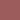
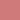
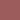
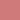

Method Image.Color.Color()->dull()
- Method dull
object
object
object
object
object- Description
-
Color modification methods. These returns a new color.
method effect h s v as light raise light level ±0 ±0 +50  




dark lower light level ±0 ±0 -50 


bright brighter color ±0 +50 +50 


dull greyer color ±0 -50 -50 


neon set to extreme ±0 max max light and dark lower/highers saturation when value is min-/maximised respective.
- Returns
-
the new color object
- Note
-
The opposites may not always take each other out. The color is maximised at white and black levels, so, for instance Image.Color.white->light()->dark() doesn't give the white color back, but the equal to Image.Color.white->dark(), since white can't get any lighter.